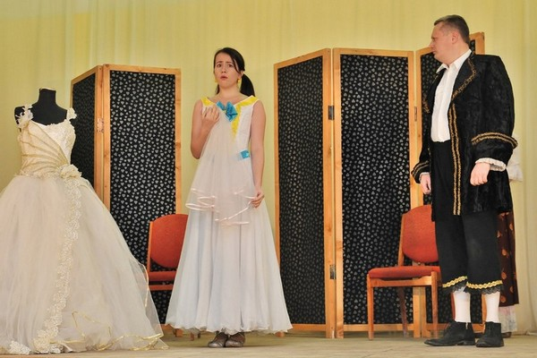
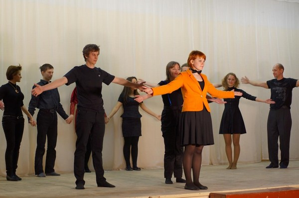

О курсах
Театр-Студия «Игра» курсы актерского мастерства и ораторского искусства для сцены и жизни была основана в 2009 году под руководством Нуркаевой Риммы – профессионального режиссера и театрального педагога. Система обучения – это веселый игровой тренинг, живое общение, путешествие в мир фантазии, ораторское искусство, психологические упражнение, путь к себе, обретение уверенности и свободы.
На курсы приходят люди разного возраста (группы делятся по возрастам), по разным причинам: кто-то для себя, а кто-то с целью связать свое будущее с театром . И те и другие получают возможность реализовать себя в полной мере и приобрести необходимые навыки. Прежде всего – это приобретение уверенности в себе на сцене и в жизни. Преодоление страха- важный шаг и это умение уже само по себе значительно для каждого. И здесь дело не в теории, а в практике. Благодаря тренингу внутреннего и внешнего внимания, умению концентрироваться на выполняемом действии и чувствовать свои реакции, которые человек чаще всего не осознает, восстанавливается внутреннее равновесие, повышается стрессоустойчивость. Как только человек начинает двигаться в этом направлении - он обретает свободу выбора и может с легкостью поменять привычную манеру поведения и создать себе новый образ. Любой человек может стать успешным, здоровым, богатым и развить любые таланты, если действительно этого хочет. А театр- это один из лучших способов понять себя, потому что играя на сцене разные роли мы находимся в необычном состоянии (измененное состояние сознания) или выход из привычной зоны комфорта. Что это дает? Отдых от самого себя, временное отключение привычных программ, снятие стресса. Как только позиция игры переносится в жизнь, у человека появляется возможность творить без лишнего напряжения, страха и агрессии - это помогает избежать многих проблем и найти выход из любой сложной ситуации.
По ораторскому искусству прорабатываются все самые важные навыки - техника речи: артикуляция, дыхание, умение управлять своим голосом, публичные выступления: уверенность, харизматичность и яркость при выступлении, импровизация: спонтанность, умение говорить на любую тему с кем угодно. Программа включена в курсы актерского мастерства и проходит самостоятельно двух дневным тренингом. Вы можете выбрать для себя наиболее удобный вариант.
У взрослой группы расписание занятий понедельник-пятница с 19ч до 21ч.
В детской и юношеской группах большее внимание уделяется творческому процессу и игротехникам. В результате занятий развивается воображение и фантазия, координация движений и выразительность тела, общительность и умение формулировать свои мысли в законченную фразу во время выступлений, смелость и быстрота реакций. С детскими и юношескими группами работа ведется по литературным героям ( отрывки из пьес, сказок, классических произведений), что приучает ребенка к чтению и расширяет кругозор. Занятия проходят два раза в неделю с 17ч до 19ч.
Мы будем рады видеть вас на наших бесплатных занятиях! Здесь можно более подробно узнать о системе и пройти бесплатный тренинг.
Предварительная запись по тел: 8-905-377-34-43.